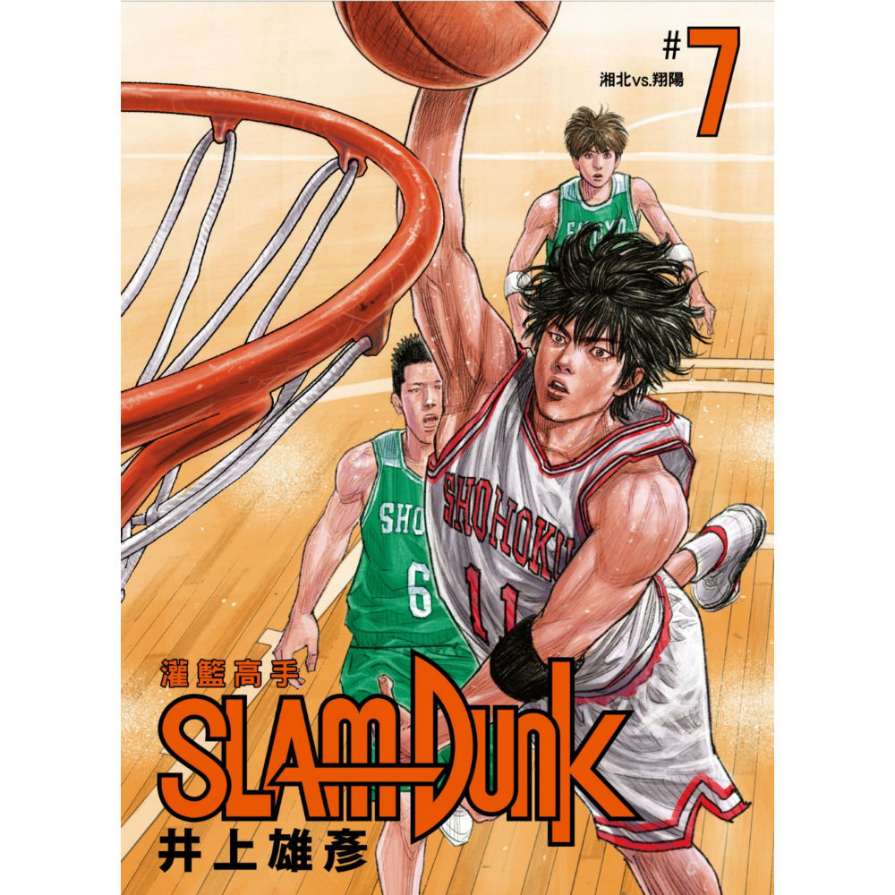
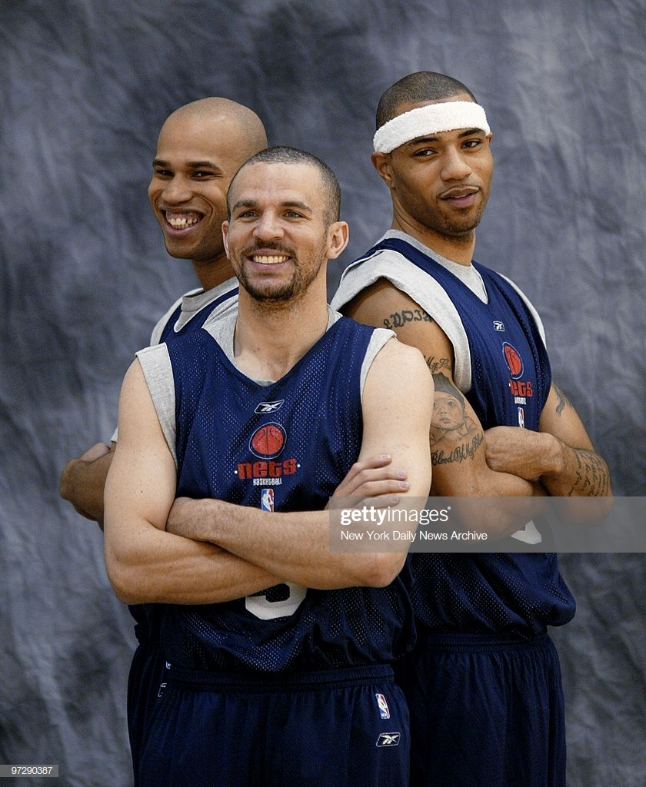
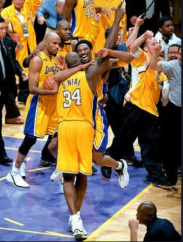
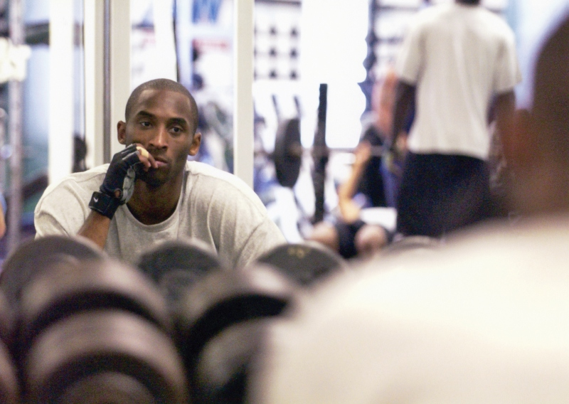
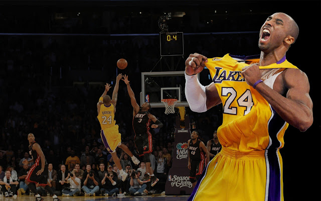
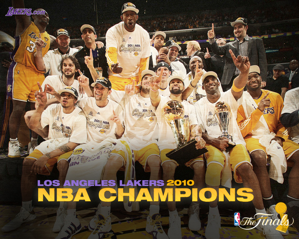
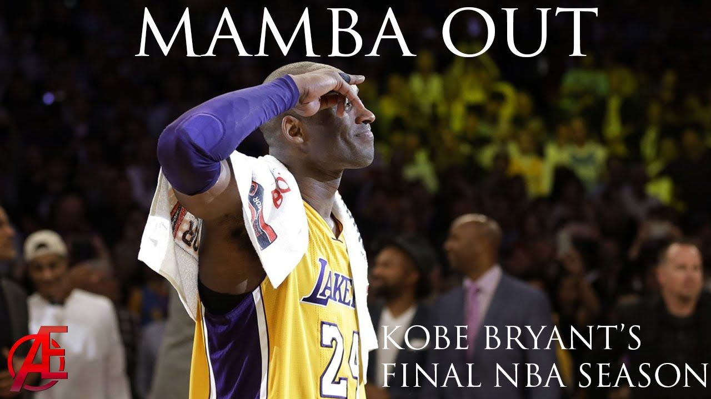

生活分享
永遠的黑曼巴 Black MBMBA
還記得小時候，因為"Slam Duck"灌籃高手而開始喜歡上籃球，但開始喜歡看球是因為當時的籃網當家球星"Jason Kidd"。 那時候還是KIDD剛轉隊到籃網然後Kidd&Martin&Jeffesson的籃網三劍客時代(Vince Carter是後面才轉來的取代Martin)
  覺得怎麼可以體能普普通通，但是可以抓下籃板之後馬上傳前場快攻，在當時防守當道的時代，算是一股新流。並且作為傳統控衛來說KIDD的天賦能力也是無庸置疑的。 然而就在02年籃網好不容易闖進總冠軍而遇到了湖人隊，被當時響噹噹的OK連線給阻擋了下來，因此也開啟我對湖人隊的興趣。 湖人從早期就一直都是籃球的強隊，一直到魔術強森才讓湖人有了SHOW TIME的說法出現，而後形成湖人王朝。 至於來帶90年代KOBE攜手俠客接手起湖人強權的棒子，KOBE跟SHAQUEL組成的OK連線打遍整個nba聯盟，三角戰術的運用、kobe的得分能力、鯊魚的禁區主宰力造就了三連霸。
在想爭取四連霸的當時，被強權TDuncan的馬刺給阻擋了下來，因此球團找來PAYTON跟MALONE組成赫赫有名的F4，想藉取兩位老將的經驗跟能力奪回冠軍，還是在總冠軍被活賽壞小子擋住。 後面雖然這歷史最強的雙人組分道揚鑣，湖人開始進入重建期，即使KOBE想力挽狂瀾可惜也還是不敵團隊籃球，就在KOBE開始不斷改寫NBA歷史的成績之後，如:NBA歷史單場第二高81分、個人總得分排名、球員單一球隊勝場數之類的種種紀錄
還是無法滿足這個對勝利渴望的男人，因此KOBE更加對自己苛刻，最有名莫過於凌晨四點就起床練球。
KOBE:我總是想要提早開始自己的一天，這樣每天就可以練得更多。 假如我早上十一點開始，練幾個小時，休息幾個小時，大概下午五點到七點可以重回健身房再練一波。但假如從清晨五點開始練到早上七點，就能在早上十一點到下午兩點再練，然後，晚上六點到八點再練第三回。 早一點開始，我每天就能多排一段訓練。遇上暑假休季期間，加起來就多了非常多的訓練時數。
同時，早點開始一天也幫助我在「籃球」與「生活」當中取得平衡。小孩早上起床時，我能陪伴她們，而她們根本不知道我才剛剛完成一段訓練。到了晚上，我可以哄她們上床睡覺，接著再用自己的時間訓練，而不是跟她們相處的時間。 我不願意犧牲球技，我也不願意犧牲與家人共處的時間。所以我決定犧牲睡眠，就是這麼簡單。(取自曼巴傳奇)這個男人開始瘋狂地寫下紀錄，歷史單場得分81分、單場12顆、連續九場得40分以上、聯盟史上第三位單月平均得分超過40分等超群的紀錄.....
07-08年之後，湖人傳奇再起，加入中鋒ANDREW BRYUM 和全能大前鋒PAUL GASOL以及隊友跟板凳的事實發揮，在總冠軍賽大戰BOSON落敗。
而後08-10年湖人由同樣陣容在NBA掀起二連霸，造就了KOBE的五枚戒指。而隔年在追求三連霸的時候，遭到德國坦克率領的小牛血洗，因此湖人三連霸終止，之後KOBE不斷受到各種傷痛的影響，即使如此KOBE還是每天練習拼鬥於每一場賽事 隨者時間，戒指與紀錄不斷推高KOBE的定位，而這位猛將也變成一位NBA傳奇。
時間來到2016年，KOBE已經在NBA奮鬥20年，他決定在今年退休，但今年老大還是繳出很棒的成績與紀錄，並且在最後一場給球迷滿滿的回饋。 2016年4月14日，洛杉磯湖人對猶他爵士是科比職業生涯最後一場比賽，在湖人的全軍動員之下，科比憑一人之力獨得60分(50投22中），另加4個籃板，4次助攻，一次抄截及一次火鍋，帶領球隊絕地反擊，以101：96拿下比賽，為其傳奇的職業生涯畫上完美句點，科比亦成爲NBA史上唯一個人最後一場比賽能夠得分60分(含)以上的球員。 賽後訪問，KOBE也說出經典的MAMBA OUT。
可惜2020年的1/26聽到，這位傳奇墜機身亡，使多麼讓人驚訝跟感傷的一件事，也感謝他為世界籃球建立這偉大的里程碑讓後面球員去突破， 不論從美國看到國際賽都可以不斷看到KOBE的身影，他的拼鬥精神及努力不懈的態度，不單單只是影響運動員，也影響許許多多生類型的人們 樹立典範，因此我們這年代都有個飛人的影子，我想那影子不是喬丹而是永遠的鬥士"BLACK MAMBA"
